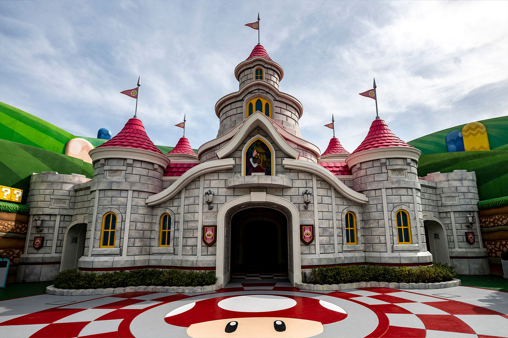
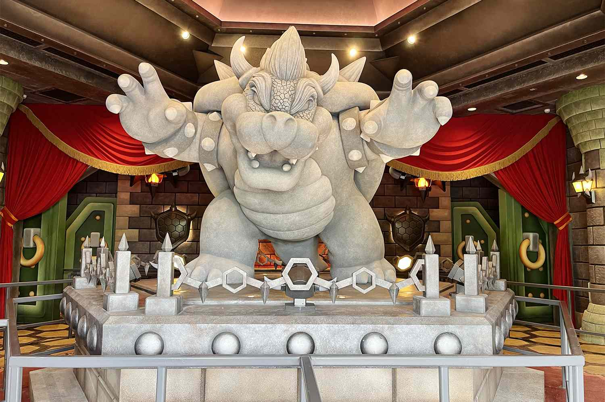
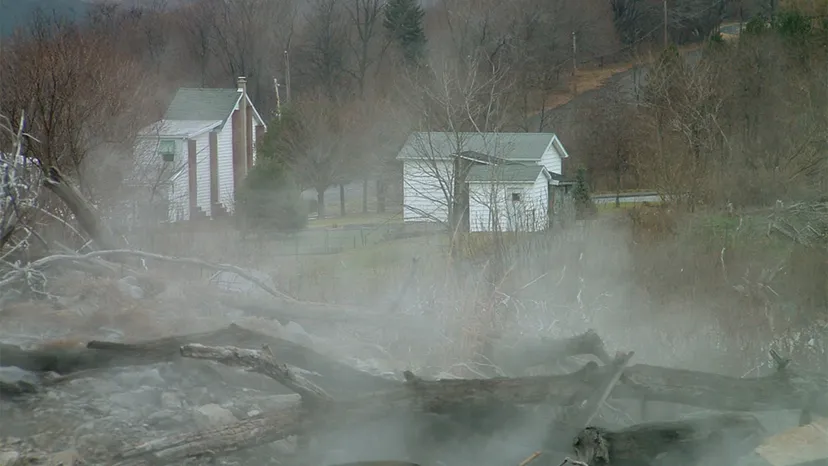
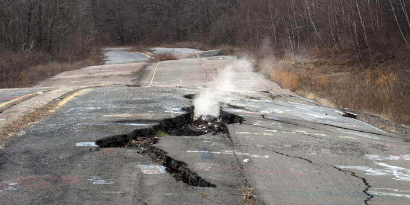
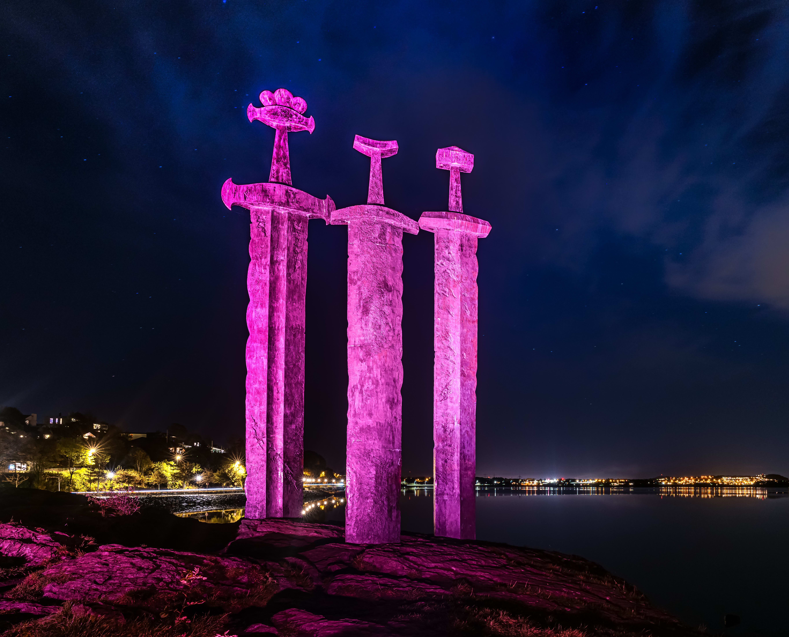

Super Nintendo World

The first video games I ever played were the Super Mario games. So last summer, I decided to take a trip to the Super Nintendo World in Japan.
If you are ever in Japan you must visit Super Nintendo World. The details make you feel like you are in Mario's world.
My favorite character is Princess Peach. So of course I had to visit her castle. Hopefully Bowser doesn't stop by and mess things up.
Oh no, look like Bowser couldn't stay away for long. Even though he is a villain, I did think this sculpture was pretty cool.
Centralia, Pennsylvania
As a big fan of horror games, especially Silent Hill, I decided to stop by Centralia during my last cross country road trip. This abandoned mining town is a must see for all horror fans.
I wonder what lurks in these abandoned houses... What does the fog hide?
I chose to explore this town on foot. The landscape was not friendly for my car.
Norway
Skyrim takes place in a fictional world, but many of the landscapes are based on viking and nordic culture.
I think my character in Skyrim definitely had a sword like this.

The towns are much more colorful than Skyrim's drab scenery. I will say I love the IRL towns much more.